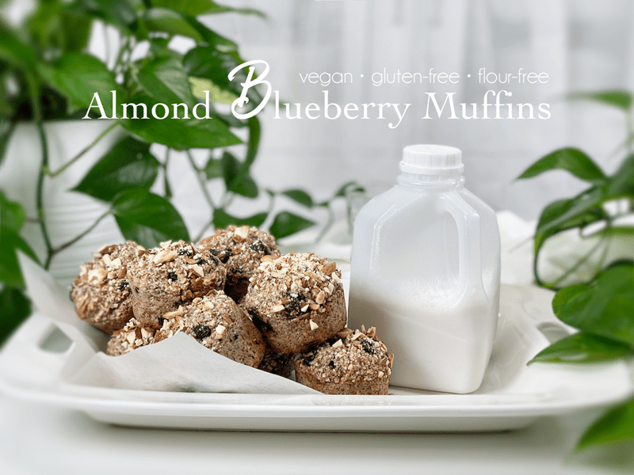
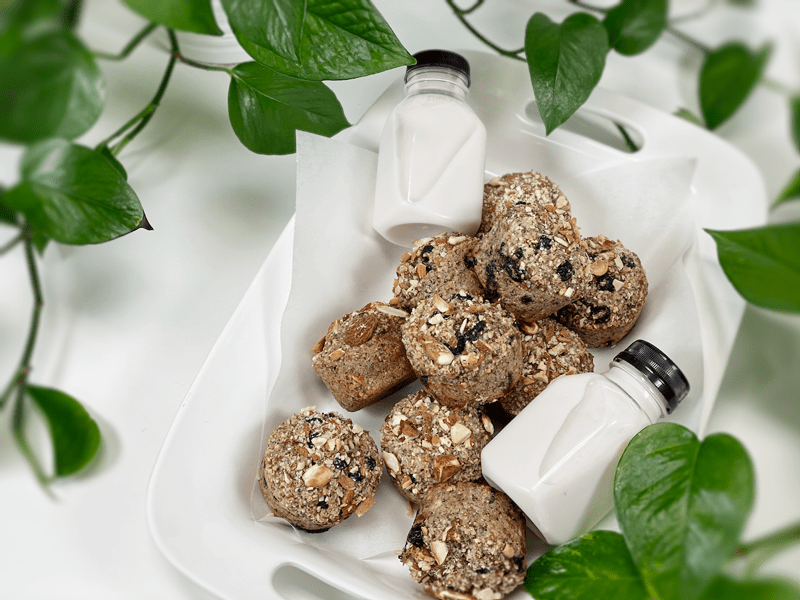
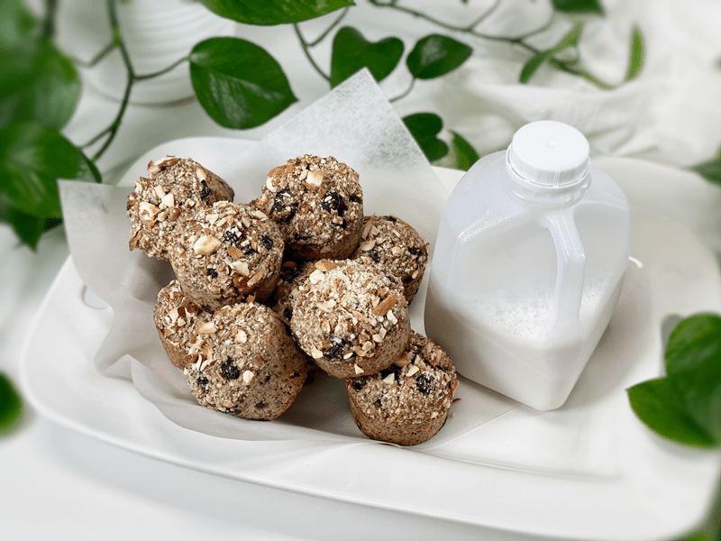
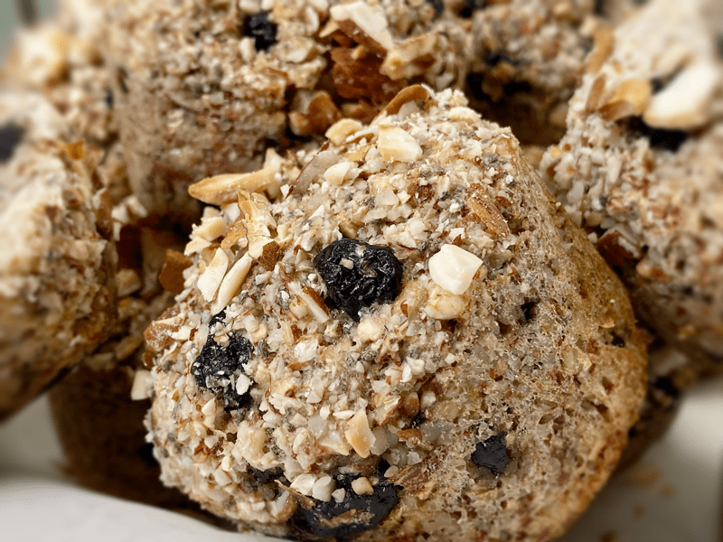

Almond Blueberry Muffins | Baked | Oil-Free | Flour-Free
The moment these muffins started baking in the oven, I immediately wanted to jump back into my jammies, glide my tippytoes into my favorite fuzzy slippers, and shake my brushed hair back into a frightful state. The aroma was quite heavenly. A smile spread across my lips as waltzed around the kitchen with my air-partner snugged up against me when… I came to a screeching halt! I froze.

What did I just spy out of the corner of my eye? I shook my head as if to realign my vision. I blinked heavily, but the sight before me didn’t change. There sat the bowl of soaking buckwheat! The music stopped (in my head) as all the rhythm from dancing drained from my body. “I-I-I… forgot to add the buckwheat to the muffins!”
I quickly ran to the oven, opened the door, and found that they were too far along in the baking process to rectify the situation. All I could do was allow them to live out the remainder of their baking time and hope for the best. In the meantime, I turned the music back up and my knees started to bounce to the beat as I pulled all the ingredients back out and whipped up more batter (with ALL of the ingredients), and trust me, I triple-checked my work.

When the timer went off, I removed the semi-deflated muffins from the oven and plopped them onto a cooling rack. They were sort of sinking into themselves, which didn’t surprise me. Bob walked out into the studio and I quickly explained why the muffins looked a bit sad. He picked one up and ate the whole thing. “Hmm, tell me, young grasshopper… how do they taste?” I asked with the accent of a cartoon villain. (Don’t ask, not sure how I come up with this stuff.) He smiled and said “Good!” as he picked the crumbs off his shirt and popped them into his mouth.
Less than an hour passed before I found him eating another one. So, I guess I will go on record to say that IF you want to make these muffins without the buckwheat… go for it. The texture is lighter; they rise but then sink a little, but in the end, the flavor is still good.

Almonds
- For this recipe, I didn’t use almond flour. Instead, I used straight-up almonds broken down to a small crumble in the food processor. I wanted the texture of the small almond pieces. I also added chopped almonds to the batter and on top of the muffins right before I slipped them into the oven.
- Substitution: If you wish to make this bread nut-free, you can use 1 1/2 cups of gluten-free rolled oats instead of almonds. You will want to break them down in the food processor, creating a grainy flour texture. Omit the chopped almonds that the recipe calls for and sprinkle rolled oats on top instead.
Buckwheat
- Do not replace the whole buckwheat with buckwheat flour. The texture will become far too dense.
- When you go to the market you will find “raw” buckwheat (uncooked, pale tan color), kasha (cooked buckwheat, brown in color), whole groats, and broken groats. For this recipe, I am using raw WHOLE buckwheat groats.
- The buckwheat needs to be soaked for at least 30 minutes but can be soaked up to 4 hours if you have a timing issue. If you run out of hours or energy for the day, let it soak overnight in the fridge. Not only does the soaking process reduce the uptake of phytic acid, but it also softens and causes the buckwheat to swell, giving the batter exactly what we need for the expected outcome.
- The nutritional benefits of buckwheat are plentiful! It is high in magnesium, Vitamin B6, fiber, potassium, and iron. It is also a good source of copper, zinc, and manganese. Another good note is that the glycemic index is low, avoiding a spike in blood sugar.
- I don’t know about you, but I love learning where and how my food grows. If this is you, click (here) to learn more.

Dried Versus Fresh Blueberries
- There are two approaches to these muffins. If you use fresh blueberries, the muffins will be very moist, almost teetering towards a cake-like texture. Dried blueberries will create a more bread-like texture. The shelf life will be altered as well — dried blueberries give you the longest expiration date.
Chia Seeds
- Chia seeds are added as the primary binder in this bread. They are used in place of eggs.
- Typically when flax or chia seeds are used as egg replacers, they are mixed with a little water before adding to the batter. For this bread recipe, it isn’t necessary because the chia seeds will activate once blended with all the other ingredients (including the water).
- Chia seeds don’t need to be ground to a powder (unlike flax seeds).
Psyllium Husks
- Psyllium husks are added to give the muffins a spongy, bread-like texture.
- Psyllium comes in powder or husk form. I used the husks in this recipe, but if you can only get your hands on powder, use it, but use half the measurement.
- Psyllium seed husks are one of nature’s most absorbent fibers–they can absorb over ten times their weight in water.
- As psyllium thickens when liquid is added, it is known to help get things moving in the digestion area. So, If you are eating recipes that contain these husks, please be sure to drink plenty of water throughout the day.
Pan Choices
- I bake my muffins in silicone muffin pans. I find they cook evenly and don’t require any oils or muffin paper liners.
- I haven’t tested this recipe in a typical tin muffin pan, but if you decide to use one, either oil the muffin cavities or use paper liners so the batter doesn’t stick.
- Instead of muffins, you can also use this batter to make bread or donuts.
 Ingredients
Ingredients
Yields 12 (1/2 cup measurement) muffins
- 1 cup raw whole buckwheat kernels, soaked
- 1 1/2 cups almonds, broken down
- 1/4 cup chia seeds
- 1/4 cup psyllium husks (not powder)
- 1 tsp sea salt
- 1/2 tsp baking soda
- 1 1/2 cups water
- 1/4 cup maple syrup
- 2 tsp apple cider vinegar
- 1/2 tsp almond extract
- 1 large RIPE diced banana
- 1 cup fresh or dried blueberries
- 3/4 cup chopped almonds
Preparation
Soaking the Buckwheat
- Place the buckwheat in a glass or stainless steel bowl, and cover with double the amount of water.
- Add 2 Tbsp raw apple cider vinegar, stir, and cover with a clean dishtowel.
- Let it sit on the counter for 30 minutes to 4 hours.
- Once ready to use, drain and rinse before adding to the food processor.
Mixing and Baking
- Preheat the oven to 350 degrees (F) and prepare your baking pan.
- I am baking these muffins in silicone pans; therefore I don’t need any oil or parchment paper. One tip when using silicone baking dishes is to place them on a baking sheet before loading and transporting to the oven. Since they are soft and flexible, they can be challenging to handle once full.
- If you use any other type of pan, I recommend lining with parchment paper so the batter doesn’t stick.
- Place the almonds in the food processor, fitted with the “S” blade, and process until the almonds break down to a small crumble.
- Add the chia seeds, psyllium husks (not powder), salt, and baking soda. Process until all the dry ingredients are well combined.
- Add the water, maple syrup, apple cider vinegar, almond extract, and banana to the food processor (along with the buckwheat). Process for 30 seconds.
- Hand mix in the dried blueberries and chopped almonds, and immediately pour the batter into the pan.
- Sprinkle the extra chopped almonds on top.
Baking
- Bake for 35-40 minutes. Poke the center of one muffin with a toothpick. It should come out dry when they are done baking.
- Baking time can vary depending on how hot your oven cooks and what type of pan you use, so watch closely the first time you make them.
- Once done baking, move the muffins onto a cooling rack so the bottoms don’t get soggy.
- Once cooled, you can store them in an airtight container in the fridge for around 5 days or pop them into the freezer for up to 3 months. Again, keep in mind that if you use fresh blueberries the shelf-life will decrease so eat them in a timely fashion.
© AmieSue.com